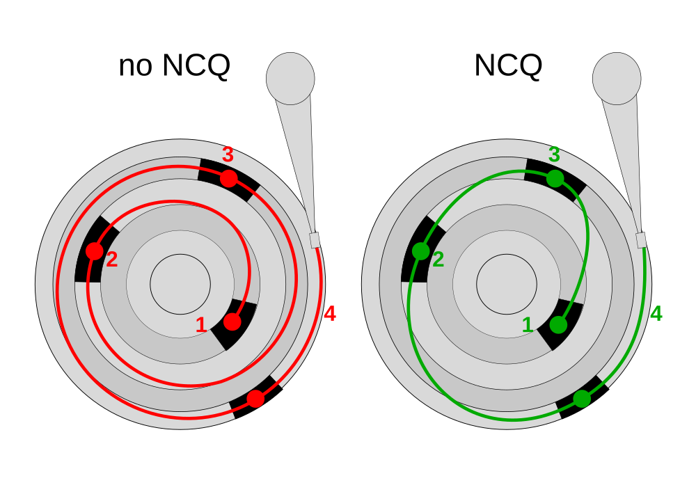

The disk service time, TS is the time taken by a disk to complete an I/O request, composed of:
where:
TS = T + L + XSeek time is the time required to position the head on the correct track. Obviously this isn’t uniform, so seek time is given separately:
time taken to move from innermost to outermost track.
time taken to move between adjacent tracks.
time taken to move head from one random track to another.
We are normally concerned with the average seek time, defined as one-third of the full stroke:
average seek time = full-stroke seek time / 3
full-stroke seek time = average seek time * 3Typical average seek times would range from 5-20ms.
Example: Calculate the full-stroke seek time for a drive given an average seek time of 6ms.
full-stroke seek time = 6 ms * 3
= 18msThe average rotational latency, L, is the time taken for the drive to revolve half a revolution:
L = 0.5 / revolutions per secondThis measure depends on drive speed, we must convert RPM to revolutions per second.
Example: Rotational latency: Determine the average rotational latency for a 5400-rpm drive:
5400 RPM = 5400 / 60 RPs
= 90 RPs
L = 0.5 / 90
= 5.5 msThe data transfer time is how long it takes for one block of data (at a given size) to be transferred inside the drive.
X = block size / internal transfer rateExample: Internal transfer time Determine the transfer time given an internal transfer rate of 40MB/s and a block size of 32kB.
X = 32kB / 40 MB/s
= ( 32 * 1024 ) / ( 40 * 1024 * 1024 )
= 0.78 msStorage performance is commonly quantified in Input/Output operations Per Second (or IOPS), which is the reciprocal of the disk service time, TS.
IOPS = 1.0 / TS
A hard disk receives multiple commands in quick succession. Each command will be delayed by seek time and rotational latency.
SATA Native Command Queueing tries to optimise the overall latency by re-ordering the commands to reduce these latencies, .
All NCQ algorithms will optimise the seek time, but some will also optimise the rotational latency.
Direct Attached Storage is where a storage device connects 1:1 with host without a network:
is name given to computer system using storage. (Laptop PC, server or mainframe.)
magnetic disk, solid state drive, tape drive, multi-host storage appliance.
connects host to storage device. The HBA ...
... needs driver support from the host operating system, although many use one of a few generic drivers.
... must match interface on the disk side AND the host’s expansion bus (PCI, ISA, others).
... nowadays often integrated on the host’s motherboard.
defines electrical and communication characteristics between the HBA and the storage device.
Host operating system will see so-called block devices representing each individual disk attached to the HBA.
Block devices can then be partitioned or otherwise spatially managed by the host operating system.
Operating system normally inserts another layer of abstraction — the filesystem.
Port multipliers can allow a single DAS port to connect to more than one device, :
HBA must support port multiplier usage
Port multiplier is transparent to individual disks
Bandwidth is shared
A storage appliance with multiple disks can connect these to 1 or more hosts in DAS-type configuration (usually SAS).
The utilisation, U of a disk controller ranges from 0 to 1:
0 <= U <= 1Although we commonly talk about utilisation as a percentage, we must convert it to a decimal fraction when working out calculations that involve utilisation. For example, 30% utilisation would mean that U=0.3.
The average response time, R, depends on the disk service time, taking into account the controller utilisation:
R = Ts / ( 1 - U )Example: Response time under load The disk service time of a disk under no load is 7.8ms. What would the response time expected under 70% load be?
R = 7.8ms ( 1 - 0.7 )
= 26msA drive will be advertised as capable of doing a certain number of IOPS. However, if we want to keep response times within a certain limit, we may limit the number of IOPS to a certain number.
IOPS limit = U desired * IOPS advertisedExample: IOPS under load: A drive is advertised as being capable of 180 IOPS. Determine the maximum permissible IOPS if load is limited to 70%.
IOPS @ 70% load = 180 * 0.7
= 126 IOPSSometimes one disk cannot meet the application requirements on its own. For a given application, the number of disks required, DR, will be determined by two other quantities:
Number of disks required to meet the capacity, DC.
Number of disks required to meet the application IOPS requirement, DI, at a given utilisation U.
The higher of these two quantities determine D:
DR = max ( DC, DI) Note that this requirement does not specify at what level the disks are combined.
A common situation is where a given application seeks to guarantee a minimum number of IOPS with a given controller utilisation time. This can be done by:
Use the controller utilisation to determine the number of available IOPS.
Divide the required IOPs among the number of available IOPS to get the minmum number of disks.
Example: Disk required for IOPS at utilisation A given application has a requirement of 3600 IOPS. The disks available have a maximum of 180 IOPS. Determine how many disks are required assuming a maximum utilisation of 80%
available IOPS = 180 * 0.8
= 144
disks required = ceil( 3600 / 144 )
= 25